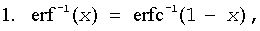
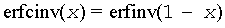

Computes inverse error function value of vector elements.
Syntax
call vserfinv( n, a, y )
call vserfinvi(n, a, inca, y, incy)
call vmserfinv( n, a, y, mode )
call vmserfinvi(n, a, inca, y, incy, mode)
call vderfinv( n, a, y )
call vderfinvi(n, a, inca, y, incy)
call vmderfinv( n, a, y, mode )
call vmderfinvi(n, a, inca, y, incy, mode)
Include Files
- mkl_vml.f90
Input Parameters
Name |
Type |
Description |
|---|---|---|
n |
INTEGER, INTENT(IN) |
Specifies the number of elements to be calculated. |
a |
DOUBLE PRECISION for vderfinv, vmderfinv REAL, INTENT(IN) for vserfinv, vmserfinv DOUBLE PRECISION, INTENT(IN) for vderfinv, vmderfinv |
Array that specifies the input vector a. |
inca, incy |
INTEGER, INTENT(IN) |
Specifies increments for the elements of a and y. |
mode |
INTEGER(KIND=8), INTENT(IN) |
Overrides global VM mode setting for this function call. See vmlSetMode for possible values and their description. |
Output Parameters
Name |
Type |
Description |
|---|---|---|
y |
DOUBLE PRECISION for vderfinv, vmderfinv REAL, INTENT(OUT) for vserfinv, vmserfinv DOUBLE PRECISION, INTENT(OUT) for vderfinv, vmderfinv |
Array that specifies the output vector y. |
Description
The ErfInv function computes the inverse error function values for elements of the input vector a and writes them to the output vector y
y = erf-1(a),
where erf(x) is the error function defined as given by:
Useful relations:

where erfc is the complementary error function.

where

is the cumulative normal distribution function.

where Φ-1(x) and erf-1(x) are the inverses to Φ(x) and erf(x) respectively.
Figure "ErfInv Family Functions Relationship" illustrates the relationships among ErfInv family functions (ErfInv, ErfcInv, CdfNormInv).
Useful relations for these functions:

| Argument | Result | VM Error Status | Exception |
|---|---|---|---|
| +0 | +0 | ||
| -0 | -0 | ||
| +1 | +∞ | VML_STATUS_SING | ZERODIVIDE |
| -1 | -∞ | VML_STATUS_SING | ZERODIVIDE |
| |X| > 1 | QNAN | VML_STATUS_ERRDOM | INVALID |
| +∞ | QNAN | VML_STATUS_ERRDOM | INVALID |
| -∞ | QNAN | VML_STATUS_ERRDOM | INVALID |
| QNAN | QNAN | ||
| SNAN | QNAN | INVALID |